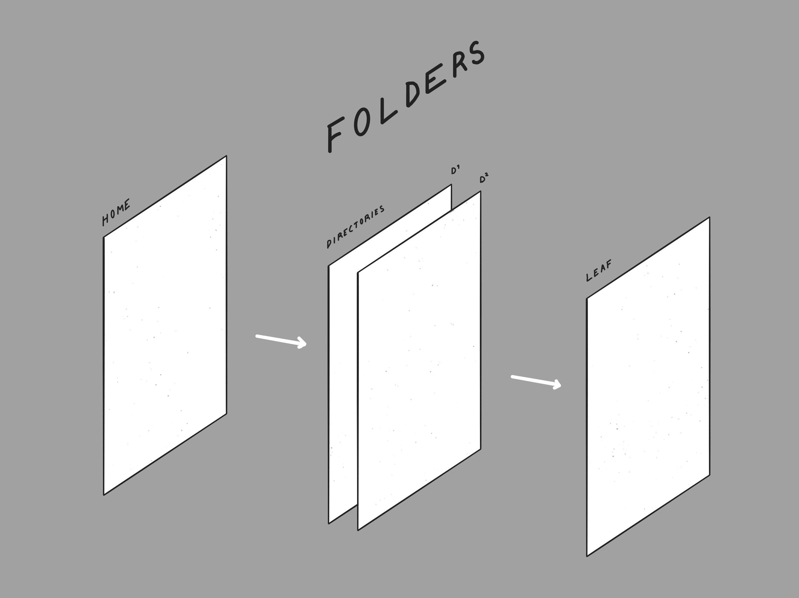
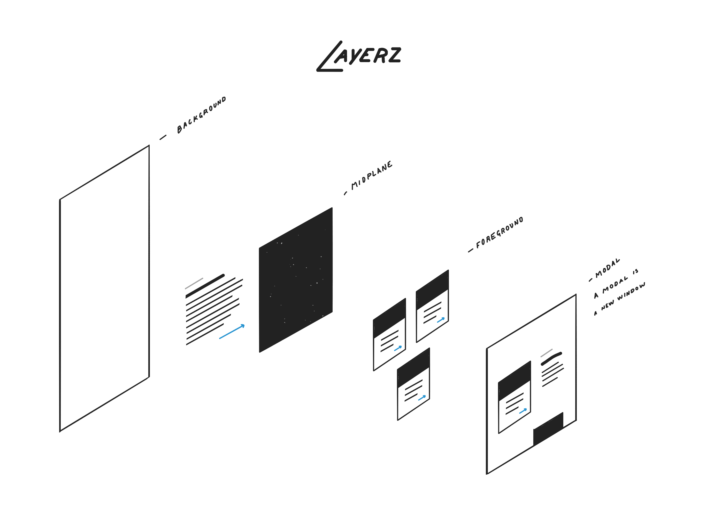
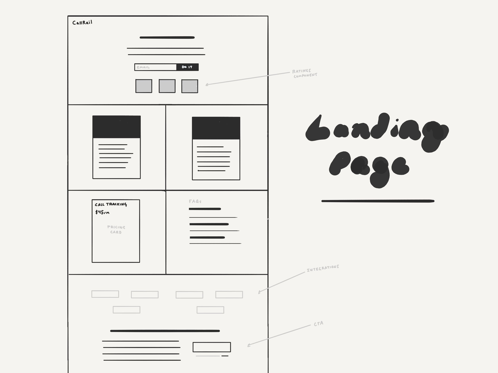
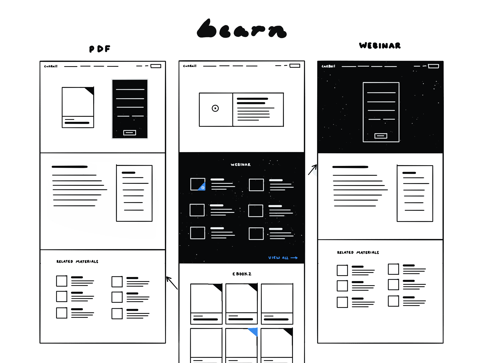
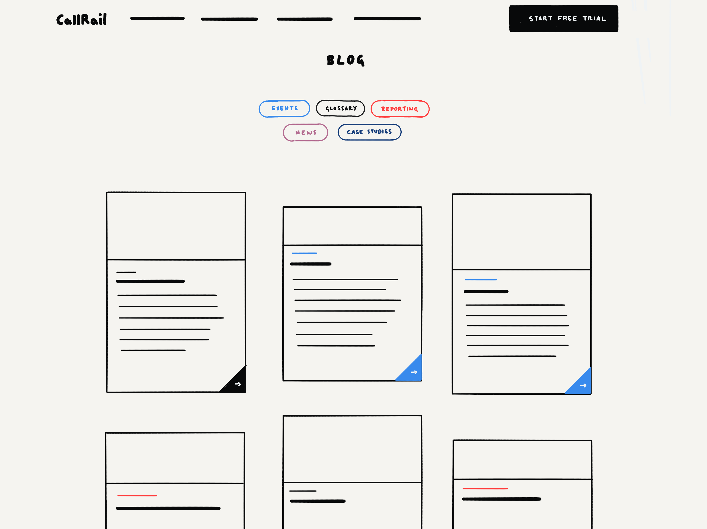
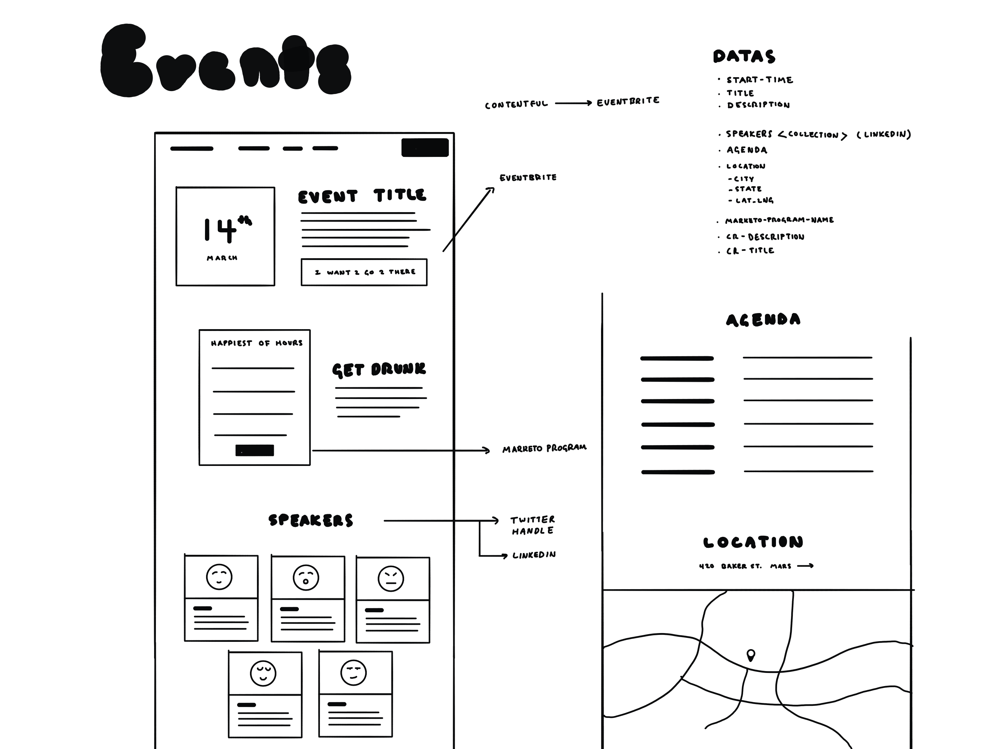

Aligning multi-disciplinary teams
Each discipline powers a system that creates cycles of iteration and incremental improvement. Collaboration and empathy was key to helping align our team around a common system that was useful and efficient.
Design Systems
I identified parts of the system that could be modularized into reusable components...just like legos! The building blocks composed pages. The pages were placed into a hierarchy of information made up of directories that terminate in leaf pages. This increased accessibility, and provided consistency across the platform.



SEO + Accessibility
We had a minor conflict with the Demand Generation team that was producing pages outside of the hierarchy. We identified core needs for the system that drove decisions that honored the SEO goals, while producing a highly accessible system.
By identifying areas of overlap that increased Accessibility and SEO we were able to produce a system that fulfilled both teams KPIs. Below is the SEO Table of Elements where we outlined goals for the new design system.
Holistic deep-dive reviews
I mapped existing content into new structures. I designed the information structure to make more sense categorically.
Sketch Wireframes
Once we had a system in place I rapidly sketched out new pages and systems that would better communicate and facilitate user interactions.




Before & After
Before
After